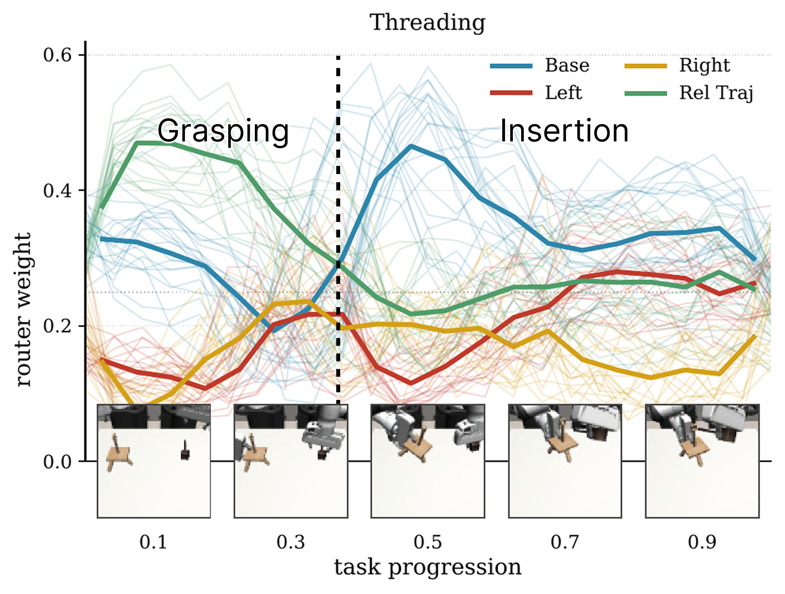
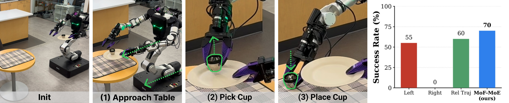

F1.
No single hand-designed frame wins across tasks, and frame choice creates up to a 15%p gap.
| Frame | Avg. | Best Tasks |
|---|---|---|
| Left | 55.6 | 2 |
| Right | 55.0 | 1 |
| Base | 61.0 | 5 |
| Rel Traj | 55.8 | 1 |
| Oracle / Worst | 63.8 / 48.8 | 15.0%p gap |
Multi-Frame Action Denoising for Bimanual Mobile Manipulation
F1.
| Frame | Avg. | Best Tasks |
|---|---|---|
| Left | 55.6 | 2 |
| Right | 55.0 | 1 |
| Base | 61.0 | 5 |
| Rel Traj | 55.8 | 1 |
| Oracle / Worst | 63.8 / 48.8 | 15.0%p gap |
F2.
| Method | Avg. |
|---|---|
| MoF-MoE | 66.8 |
| MoF-Ensemble | 65.9 |
| Oracle Frame | 63.8 |
| Single-Frame Ensemble | 55.9 |
| MoE-DP | 55.1 |
| DP | 50.3 |
F3.
| Ablation | Avg. | Delta |
|---|---|---|
| MoF-MoE | 66.5 | 0.0 |
| Rel Traj canonical | 64.0 | -2.5 |
| w/o Best Frame | 60.3 | -6.2 |
| w/o Aux | 58.5 | -8.0 |
| w/ Ortho Proj | 59.5 | -7.0 |




Pouring Task
Serving Task
Kitchen Cleanup Task
Our MoF-MoE dynamically switches between frame reasoning modes across subtasks.